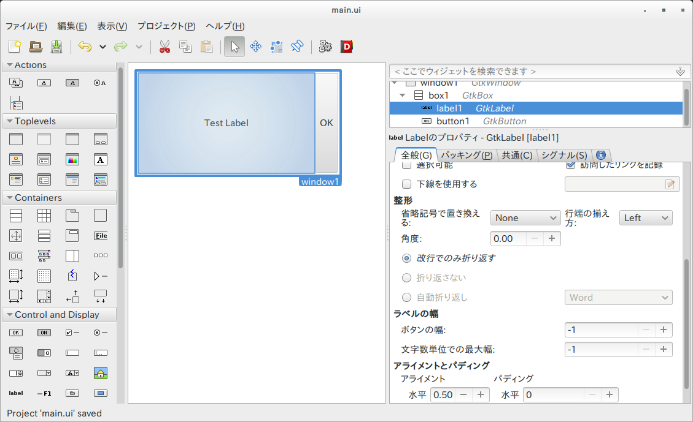

Gladeの活用
以前の章のようにUIをコードで記述していけば、UIを作ることができますが、命令的な記述では手間がかかります。 そこで登場するのが、GladeというGtk+アプリケーションのUIデザイナーです。
GladeでのUIの作成
glade &でGladeを起動すると、UIデザインの画面が表示されるので、そこでウィジットをドラッグアンドドロップで配置していきます。

あとは、「ファイル＞名前をつけて保存」によりUIの定義が記述されたXMLファイルを保存します。ここでは、ファイルパスをsrc/resources/main.ui とします。
BuilderによるUI定義ファイルの呼び出し
GtkBuilderを利用すると、Gladeで保存したファイルからUIを作成することができます。Rustのinclude_str!マクロを利用すると、コンパイル時に文字列にしておいてくれるため、さらに便利です。
保存したmain.uiを表示するには、Builderを作り、必要に応じてget_objectで取り出してシグナルを接続します。
extern crate gtk;
use gtk::prelude::*;
fn main() {
gtk::init().expect("Failed to initialize GTK.");
let ui = include_str!("resources/main.ui");
let builder = gtk::Builder::new_from_string(ui);
let window1 : gtk::Window = builder.get_object("window1").unwrap();
window1.connect_delete_event(move |_, _| {
gtk::main_quit();
Inhibit(false)
});
window1.show_all();
gtk::main();
}
get_object()は、型がわからないため、明示的に型を指示します。